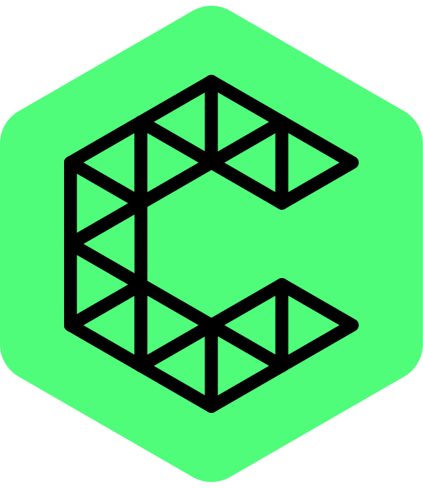
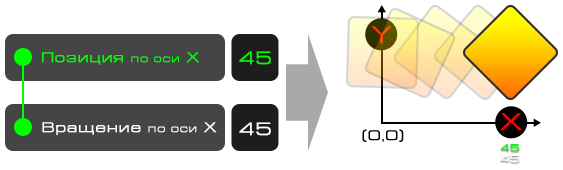

О программе

Cavalry — это профессиональный инструмент для 2D-анимации и моушн-дизайна, который сочетает в себе традиционные методы работы с ключевыми кадрами и процедурный подход к созданию анимации. Программа была создана разработчиками, стоявшими у истоков MASH для Maya, и изначально позиционировалась как «Houdini для 2D» — инструмент, где вместо ручного анимирования каждого элемента вы выстраиваете систему правил и связей, которая генерирует движение автоматически.
В феврале 2026 года Cavalry был приобретён компанией Canva, и с этого момента полная версия программы стала бесплатной для индивидуальных художников, включая коммерческое использование. Это делает Cavalry доступной альтернативой After Effects для решения широкого спектра задач: от рекламной анимации и оформления трансляций до генеративного искусства и визуализации данных.
Основная философия: процедурный подход
Главное отличие Cavalry от традиционных анимационных программ — это процедурный подход. В After Effects вы обычно создаёте слой, добавляете к нему ключевые кадры и вручную настраиваете каждое движение. В Cavalry вы описываете правила, по которым система сама генерирует результат.
Одной из главных особенностей является возможность управлять одними значениями на основе других. К примеру, если связать значение позиции со значением вращения, то при изменении позиции объекта он будет вращаться!:

Ещё один простой пример: вместо того чтобы вручную расставлять 100 квадратов в сетке и анимировать каждый, вы создаёте один квадрат и применяете к нему Duplicator — инструмент, который автоматически размножает форму по заданному алгоритму (сетка, круг, спираль, случайное распределение и т.д.). Если вы измените цвет или размер исходного квадрата, все 100 копий обновятся мгновенно.
Такой подход экономит время при создании повторяющихся элементов, позволяет легко управлять версиями и делает сцены более удобными для изменений. Думайте о Cavalry как о конструкторе, где вы собираете не готовую анимацию, а систему, которая её порождает.